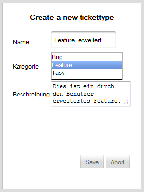

Tickettyp erstellen

Zum Anlegen eines Tickettyps muss zunächst der Name eingetragen und eine Kategorie ausgewählt werden.
Bei der Kategorie kann ausgewählt werden, ob der zu erstellende Tickettype ein "Bug", "Feature" oder ein "Task" sein soll. Hierdurch werden die standardmäßig definierten Feldtypen der jeweiligen Kategorie entsprechend zugeordnet.
Weiterhin kann eine Beschreibung hinterlegt werden.
Created with the Personal Edition of HelpNDoc: Free Web Help generator